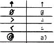
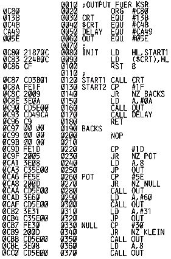

Nascom Journal |
Oktober 1981 · Ausgabe 10 |
Der Anschluß der ESW 100 KSR von Olympia ist absolut kein Hexenwerk und ohne große Hardwareänderungen möglich, Die einfachste Lösung ist wohl der Anschluß an die TTY (20 mA) Schnittstelle.
Dazu sind folgende Pins zu verbinden:
| ESW 100 KSR | Nascom1 SK2 |
| Pin 9 TTYT- | Pin 8 Masse |
| Pin 10 TTYT+ | Pin 5 KBD+ |
| Pin 21 TTYR+ | Pin 12 PTR+ |
| Pin 25 TTYR- | Pin 11 PTR- |
Weiterhin sind am Drucker die Pins 2 und 11 und die Pins 3 und 18 jeweils mit einander zu verbinden.
Um das CTS (Clear to send) Signal zu unterdrücken, muß auf der Platine des KSR ein Widerstand 2,7 K eingesetzt werden. Seine Position ist aus der mitgelieferten Schaltung ersichtlich,
Um den UART auf die 2 Stopbits umzustellen, die der KSR braucht, muß Link 2 auf der Nascom Platine von Masse getrennt werden. Man könnte aber ebenso den KSR auf 1 Stopbit umstellen; dazu müßten die Dioden D26 und D27 aus der KSR Platine entfernt werden.
Soweit funktioniert der Typenraddrucker schon als Empfänger. Um aber sein Keyboard auch als Sender benutzen zu können, muß das Signal des Keyboards noch invertiert werden. Glücklicherweise ist dafür noch ein Gatter auf der Nascom Platine frei, Biegen Sie einfach die Pins 5 und 6 aus dem IC 31 heraus und legen das Gatter so zwischen Link 3 des Nascom, daß das Eingangssignal invertiert wird. ( siehe Schaltung ).
Um den 1760 Hz Takt des Nascom TTY Clock Generators verwenden zu können, muß man eine Drahtbrücke auf der KSR PLatine verändern, (siehe Schaltplan). Besser wäre es allerdings in Hinblick auf die Übertragungsgeschwindigkeit, den Nascom Takt durch Verwendung eines kleineren Kondensators am 555 zu verändern und so auf max. 17 Zeichen pro Sekunde zu erhöhen.
Die Änderungen an Link 2 und 3 und die unterschiedlichen Clocks sollten natürlich durch Schalter oder Relais für Cassette und Drucker umschaltbar gestaltet werden.
Für eventuelle Fragen zu diesem Thema stehe ich gerne zur Verfügung.
Da der KSR nicht alle Zeichen abbilden kann, die(vor allem in BASIC) benötigt werden , wurde folgendes kleine Programm entwickelt, das die Zeichen entsprechend umformt.Sie werden folgendermaßen abgebildet:

INIT Startet das Programm als Ersatz für die CRT Routine, START2 gibt ohne CRT aus; für die Verwendung mit dem ASM Assembler wird bei START3 begonnen (weil sonst zwei Leerzeilen ausgegeben werden). Für BASIC läßt sich das Programm mit DOKE, 3147,3207 zum Listen verwenden; es ist aber bis auf die Startadressen voll verschieblich.

| Seite 8 von 28 |
|---|